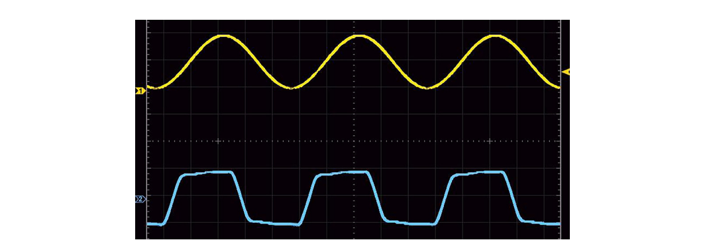
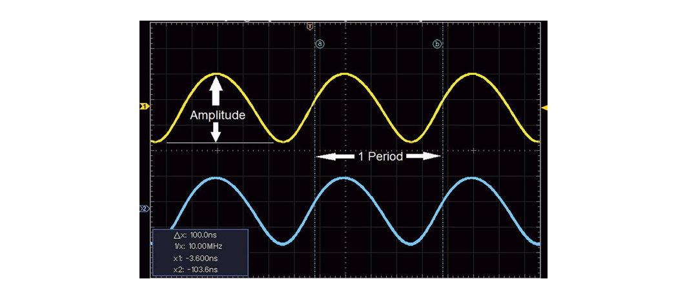
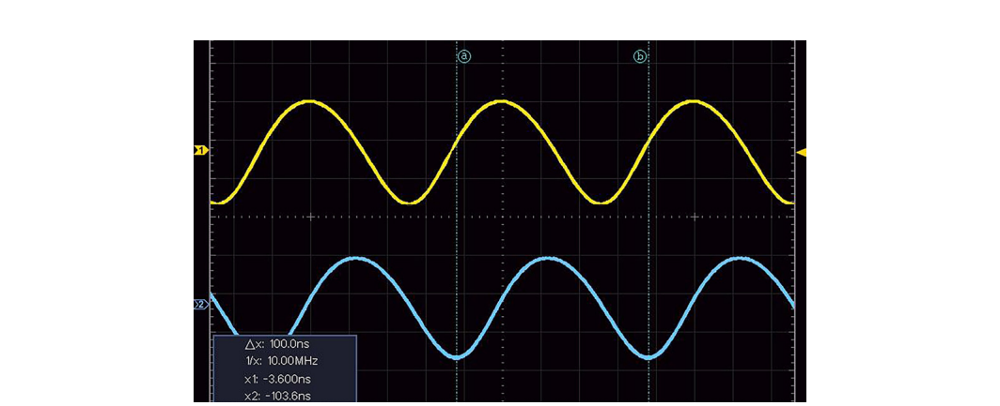
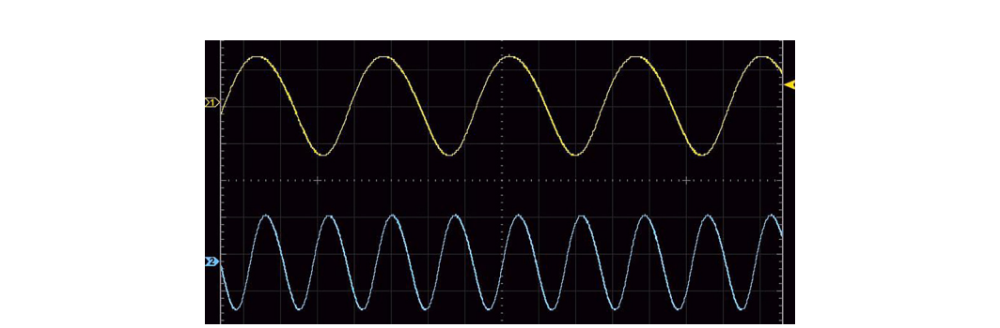
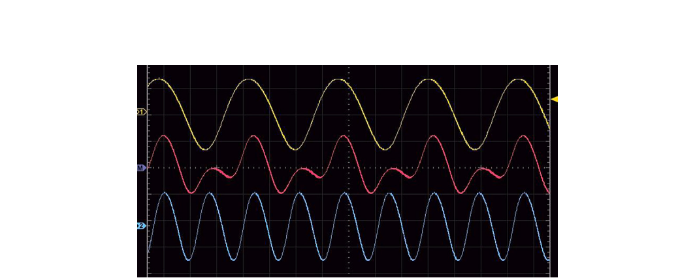
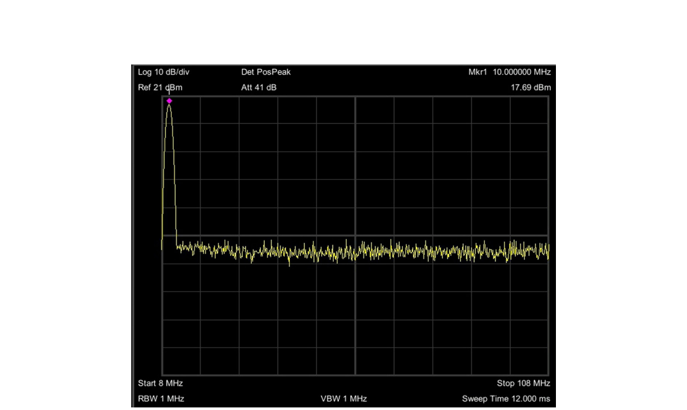
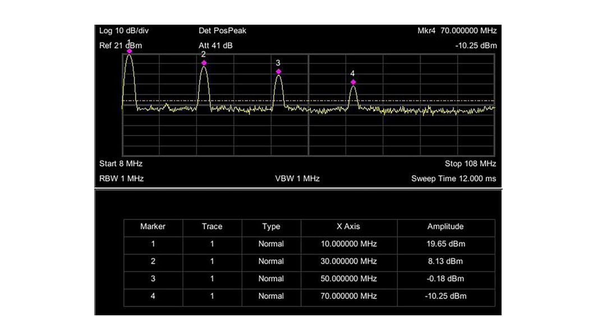

Every RF measurement you will ever make is a view of the same physical thing from one of two angles. You can watch a signal change over time, or you can ask which frequencies it is made of. The time domain and the frequency domain are not different signals. They are two descriptions of one signal, and the math that connects them is exact.
This chapter builds that foundation. We start with time domain measurement and the oscilloscope, move to the sine wave and its four defining properties, then cross into the frequency domain through the Fourier view. The last two sections add the working vocabulary you cannot avoid in RF: the decibel and the 50-ohm impedance system. Master these six ideas and the rest of the book follows naturally.
It is natural to measure events with respect to time. Time of flight is a good example. It looks at how much time passes as an object, whether a small particle or a large airplane, moves from point A to point B. That is a time domain measurement: the quantity of interest is plotted against the clock.
In electronics, time domain measurements are everywhere. When an event occurs can decide whether a design succeeds or fails. A logic edge that arrives a few nanoseconds late, a pulse that is slightly too wide, a glitch between two clock cycles: these are timing problems, and you find them by watching voltage against time. The challenge is speed. Many of the events that matter in modern electronics happen far faster than human senses can follow, so we rely on instruments built to capture them.
Going Deeper - A nanosecond is about a foot of light
Many of Berkeley Nucleonics' earliest pulse generators resolved the time domain in nanoseconds. A nanosecond is one billionth of a second, and it happens to be roughly the time light takes to travel one foot in a vacuum. That coincidence is a useful mental ruler. When you see a 5 ns delay on a screen, you can picture light crossing about five feet, which makes propagation delay and cable length feel concrete rather than abstract.
To observe fast electrical events directly, the standard tool is the oscilloscope.
The oscilloscope is one of the most common instruments for time domain measurement. In its simplest form it plots a graph of the voltage at its input against time. The horizontal axis is time, the vertical axis is amplitude, and the display refreshes fast enough that a repeating signal appears to stand still.

In Figure 2.1 the horizontal axis shows time and the vertical axis shows amplitude. The upper waveform is sinusoidal and the lower waveform is a square wave. Both share an important property: they contain elements that repeat with respect to time. That repetition is what lets an oscilloscope show when events happen, measure how large they are, and measure the time between them.
A modern oscilloscope does more than draw traces. It triggers on a chosen condition so the display stays stable, it places measurement cursors, and it computes parameters such as rise time, pulse width, and frequency automatically. Many bench scopes also include a fast Fourier transform (FFT) function, which previews the frequency content of a captured waveform and gives you a first taste of the frequency domain on the same instrument. Bandwidth and sample rate set the limits: a scope can only resolve features that fall inside its bandwidth and that its sampling captures faithfully.
When we describe time-varying events, we borrow terms from basic wave theory. The cleanest place to learn those terms is the simplest repeating waveform, the sine wave.
The sinusoidal wave, usually just called the sine wave, is a smoothly varying, time-dependent waveform that appears constantly in electronics. It is the natural shape of anything that oscillates without distortion, from a tuning fork to a clean RF carrier. Mathematically it is written:
y(t) = A · sin(2πft + φ)
Here A is the amplitude, the peak deviation of the function from zero. The term f is the frequency, the number of oscillation cycles that occur each unit of time. And φ is the phase, which specifies, in radians, where in its cycle the oscillation sits at t = 0. When t advances, the whole waveform is shifted in time by φ / 2πf seconds. Figure 2.2 shows two sine waves that are in phase, and Figure 2.3 shows one shifted relative to the other.


Two more terms complete the picture. The period of a time-varying signal is the smallest amount of time that defines one fundamental repeating element of the waveform. Figure 2.2 shows the amplitude and one period of a sinusoid. The frequency is simply how many of those periods occur in a given amount of time. Period and frequency are two ways of saying the same thing, linked by:
f = 1 / T
where f is the frequency in hertz (Hz) and T is the period in seconds. The hertz is a derived unit equal to the inverse of a second (1/s), so one hertz means one cycle per second.
A worked example makes this stick. Consider the voltage at a wall outlet in the United States. If you measured it with an oscilloscope you would see a sinusoid with an amplitude near 110 V and a period of about 16.67 ms, meaning the voltage pattern repeats every 16.67 ms. The frequency is then:
f = 1 / T = 1 / 16.67 ms = 60 Hz
That is the familiar 60 Hz mains frequency. The same waveform can be described fully by its time domain characteristics (amplitude, period, phase) or by its frequency domain characteristics. They are interchangeable descriptions, and being fluent in both is the heart of RF work.
Simple periodic waveforms are the building blocks for everything more complicated. Once you understand a single sine wave, you can understand what happens when several are present at once.
Figures 2.2 and 2.3 show two sinusoids at the same frequency, 10 MHz. Now consider two sinusoids at different frequencies, shown in Figure 2.4.

What happens when we add them together? The result is shown in Figure 2.5.

This is the superposition principle. When you add sine waves, the resulting waveform can take a shape very different from any of the originals. Turn the idea around and it becomes one of the most useful statements in all of signal analysis: any waveform can be constructed by adding together simple sine waves.
A little vocabulary helps here. The fundamental frequency is the lowest repeating frequency present in a waveform. In our example that is 10 MHz. A harmonic is a component at an integer multiple of the fundamental. The second harmonic sits at twice the fundamental, 20 MHz (2 × 10 MHz); the third at 30 MHz, and so on. By choosing which harmonics to add and in what proportion, you can synthesize any periodic shape.
There is a famous special case. If you start with a fundamental and keep adding only the odd harmonics (the 1st, 3rd, 5th, 7th, 9th, and so on) in the right amounts, the sum gradually flattens its peaks and steepens its edges until it approaches a square wave. Figure 2.6 shows a 10 MHz sine wave next to a 10 MHz square wave built this way.
The square wave is starting to look square, but the frequency of its overall shape is still 10 MHz. Adding more odd harmonics sharpens the corners further without changing that fundamental rate. This is the bridge to the next idea: if a square wave is really a sum of sinusoids at 10, 30, 50, and 70 MHz, there ought to be an instrument that shows those component frequencies directly.
The frequency domain answers a different question than the oscilloscope. Instead of "how does this signal change over time?", it asks "which frequencies is this signal made of, and how much power is in each?" The mathematical tool that converts between the two views is the Fourier transform, and its practical, sampled cousin is the fast Fourier transform (FFT). The transform is reversible: no information is lost going from time to frequency or back again.
The instrument that shows the frequency domain directly is the spectrum analyzer, which displays amplitude (usually power) on the vertical axis against frequency on the horizontal axis. Where an oscilloscope draws the shape of a signal, a spectrum analyzer draws its recipe.
Start with the simplest case. If we source a clean 10 MHz sine wave into a spectrum analyzer, we see a single spike at 10 MHz, as in Figure 2.7. A pure sine wave contains exactly one frequency, so it shows up as one line.

Now feed the same analyzer a 10 MHz square wave. The picture changes completely, as Figure 2.8 shows.

You can see the fundamental at 10 MHz together with its odd harmonics: the 3rd at 30 MHz, the 5th at 50 MHz, and the 7th at 70 MHz. Each line is lower in amplitude than the one before it, which is exactly the recipe that synthesizes a square wave. The two views agree perfectly. The square wave that looked like one shape in the time domain is revealed as a comb of sinusoids in the frequency domain.
Going Deeper - The same square wave on a scope's FFT
You do not need a separate instrument to see this. Many oscilloscopes include an FFT function that transforms the captured time domain trace into a frequency domain plot on the same screen. Capture a square wave, switch on the FFT, and the harmonic comb appears, the fundamental tall on the left with progressively shorter odd harmonics stepping out to the right. It is a convincing way to watch Fourier's theorem operate on a real signal.
Looking at a signal in the frequency domain tells you, at a glance, which frequencies you are generating and how power is distributed among them. That makes spectral analysis indispensable for designing and troubleshooting communications circuits, radio and broadcast systems, transmitters and receivers, and electromagnetic compliance (EMC). Later chapters explain spectrum analyzer architectures and how to drive the instrument correctly. For now the key takeaway is the duality itself: time and frequency are two exact views of one signal.
RF deals with quantities that span an enormous range. A signal arriving at a receiver might be a few trillionths of a watt while a transmitter pushes out hundreds of watts. Writing those numbers out is clumsy and the arithmetic of cascaded gains and losses becomes a chain of multiplications. The decibel (dB) solves both problems by working in logarithms, which compress wide ranges and turn multiplication into addition.
The decibel is a ratio, not an absolute quantity. For two power levels P1 and P2:
dB = 10 · log10(P2 / P1)
A few values are worth memorizing because they recur constantly. A factor of 2 in power is about +3 dB, and halving power is about -3 dB. A factor of 10 is exactly +10 dB, and a factor of 100 is +20 dB. So +30 dB means a thousandfold increase in power. Because the scale is logarithmic, gains and losses along a signal path simply add: an amplifier of +20 dB followed by a cable loss of -3 dB and a filter loss of -1 dB yields a net +16 dB. That additive bookkeeping is why every RF block diagram is labeled in dB.
When the ratio is taken against a fixed reference, the decibel becomes an absolute unit. The most common in RF is dBm, decibels relative to one milliwatt:
P(dBm) = 10 · log10( P / 1 mW )
By this definition 0 dBm equals exactly 1 mW. Then 30 dBm is 1 W, -30 dBm is 1 µW, and -90 dBm is 1 pW. Receiver sensitivities are often quoted around -90 to -110 dBm, while transmit powers run from a few dBm up to +40 dBm or more. Two related references appear often as well: dBW is referenced to one watt (0 dBW = 30 dBm), and dBc expresses a level relative to the carrier, which is how harmonics, spurs, and phase noise are usually specified.
A word of caution about voltage. When you compute decibels from voltage rather than power, the formula uses a factor of 20 instead of 10, because power is proportional to voltage squared:
dB = 20 · log10( V2 / V1 )
This factor-of-20 form is only valid when both voltages are measured across the same impedance. Mixing the two definitions is one of the most common errors newcomers make. In a matched 50-ohm system the distinction is handled consistently, which is the natural lead-in to the last section.
Going Deeper - Why +3 dB is "double"
The number comes straight from the logarithm. Ten times the base-10 log of 2 is 10 × 0.301, which rounds to 3.01 dB. The approximation that +3 dB doubles power and -3 dB halves it is accurate to better than half a percent, so engineers treat it as exact in their heads. The companion rule, +10 dB for ten times the power, is exact by definition. Combine the two and you can estimate almost any ratio without a calculator: +13 dB is about 20 times, +23 dB is about 200 times.
At low frequencies a wire is just a wire. At RF, a length of cable is a transmission line with its own characteristic impedance, and that impedance governs how energy moves through it. If the impedance of a source, a cable, and a load all match, power flows from one to the next with minimal reflection. If they do not match, part of the signal bounces back toward the source, producing standing waves, lost power, and measurement error.
Characteristic impedance, written Z0, is set by the physical geometry of the line: the conductor sizes, their spacing, and the dielectric between them. For coaxial cable it depends on the ratio of the outer conductor's inner diameter to the inner conductor's diameter, along with the dielectric constant of the insulation. It is a property of the cable's construction, not of its length.
The RF industry standardized on 50 ohms for most test and communication systems, and there is a real engineering reason behind the choice. For an air-dielectric coaxial line, the impedance that minimizes signal loss is near 77 ohms, while the impedance that maximizes power-handling is near 30 ohms. Fifty ohms is close to the geometric balance between those two optima, giving a practical compromise of low loss and good power capability in one cable. Once the ecosystem of connectors, instruments, and components converged on 50 ohms, the standard became self-reinforcing. (Cable television and video are the notable exceptions, using 75 ohms, which sits nearer the low-loss optimum.)
Matching matters because mismatch is measurable and costly. The usual figures of merit are the reflection coefficient (the fraction of the wave amplitude reflected at a junction), the return loss (the same idea expressed in dB, with larger numbers meaning less reflection), and the voltage standing wave ratio (VSWR), the ratio of the maximum to minimum voltage along a mismatched line. A perfect match gives a VSWR of 1:1, zero reflection, and infinite return loss. Real components fall short of that ideal, and quantifying how far short is the job of the network analyzer covered in a later chapter.
BNC in Practice - Why connectors and impedance are not afterthoughts
Berkeley Nucleonics builds RF and microwave instruments, signal generators, and analyzers around the 50-ohm standard, and so do the cables, attenuators, and adapters in a typical test rack. A single 75-ohm adapter slipped into a 50-ohm path, or a connector left finger-tight, can add reflections that swamp the measurement you are trying to make. When a reading looks wrong, the impedance path is one of the first things worth checking. For specific connector types, frequency ranges, and matching specifications, verify against the current BNC datasheet for the instrument in use.
You now have the full toolkit for the rest of the book: the time domain and the oscilloscope, the sine wave and its four properties, the frequency domain and the Fourier view, the decibel, and the 50-ohm system. Every measurement chapter ahead is built from these six ideas.
Take it interactively. The quiz lives on its own page with hidden answers - write your attempt first (even four characters works), then reveal. Self-graded. About 10 minutes.
Or read the questions and answers inline below (preserved for print and offline use).
[1] J.B.J. Fourier, "Théorie analytique de la chaleur," 1822 (origin of Fourier analysis). Foundational; verify citation style before publication.
[2] IEEE Std 100, "The Authoritative Dictionary of IEEE Standards Terms" (definitions of decibel, dBm, VSWR, return loss). Verify current edition before publication.
[3] Bird Technologies / industry application notes, "The 50 Ohm Question: Impedance Matching in RF Design," on the 30-ohm and 77-ohm coaxial optima. Verify figures before publication.
[4] Berkeley Nucleonics Corporation, current oscilloscope, signal generator, and spectrum analyzer datasheets at berkeleynucleonics.com. Verify all specifications against the current datasheet before publication.